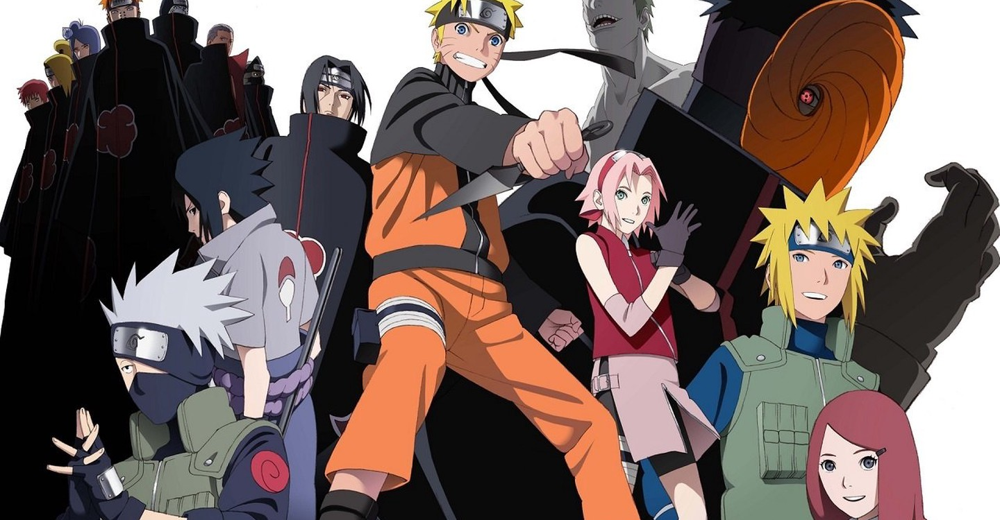

Naruto (ナルト?), romanizada como NARUTO, es una serie de manga escrita e ilustrada por Masashi Kishimoto. La obra narra la historia de un ninja adolescente llamado Naruto Uzumaki, quien aspira a convertirse en Hokage, líder de su aldea, con el propósito de ser reconocido como alguien importante dentro de la aldea y entre sus compañeros.
La serie está basada en un one-shot que Kishimoto realizó en agosto de 1996 para la revista Akamaru Jump.3 A partir de noviembre de 1999, Naruto es publicado por la editorial Shūeisha en la revista semanal japonesa Shōnen Jump,4 siendo recopilado desde entonces en setenta y dos volúmenes. El éxito del manga hizo que su trama fuera adaptada a un anime producido por Pierrot y distribuido por Aniplex, el cual fue transmitido por la cadena televisiva TV Tokyo el 3 de octubre de 2002. La primera temporada duró 220 episodios, y poco después se creó una secuela, Naruto: Shippūden, cuya emisión empezó el 15 de febrero de 2007. Además, Pierrot ha producido nueve películas basadas en la serie, tanto de la primera como la segunda temporada, así como varias animaciones originales. Otras piezas de merchandising incluyen un conjunto de novelas ligeras, artbooks, videojuegos y cromos de colección desarrollados por distintas empresas. El 6 de octubre de 2014, a falta de tan solo cinco publicaciones, se anunció el final para el manga, que concluyó el 10 de noviembre de 2014
Naruto Uzumaki es un ninja adolescente que tiene encerrado en su interior al «Zorro de Nueve Colas» (Kyūbi no Kitsune 九尾の狐?).23 Doce años antes del inicio de la serie, este demonio atacó a la Aldea Oculta de la Hoja matando a muchas personas.23 Como consecuencia, el líder de la aldea (el Cuarto Hokage, Minato Namikaze) sacrificó su vida utilizando el Shiki Fūjin para sellarlo dentro de Naruto cuando era un recién nacido, con lo que esperaba detener la masacre. Por ello, Naruto fue víctima de maltratos por quienes lo consideraban como el propio Kurama.23 A manera de solución, el Tercer Hokage (quien tuvo que reasumir el mando luego del sacrificio del Cuarto Hokage) publicó un decreto donde prohibía a cualquiera la mención sobre el ataque de Kurama, y quien lo hiciera sería severamente castigado.23 Doce años más tarde, Naruto se gradúa de la Academia Ninja usando su técnica multi-clones de sombra (影分身の術 Kage Bunshin no Jutsu?), proveniente del pergamino prohibido de la aldea, el cual había sido robado por Naruto tras ser engañado por el ninja renegado Mizuki, con el supuesto fin de salvar a su maestro Iruka Umino. Este encuentro le permitió a Naruto percatarse de que él era el recipiente contenedor del Kyūbi, y que había alguien que lo estimaba y lo reconocía moralmente como una persona.
La historia principal sigue a Naruto y al crecimiento individual de sus amigos, junto a su desarrollo como ninja. Además, se centra en las interacciones entre estos y la influencia del entorno en sus personalidades. Conforme transcurre la serie, Naruto se relaciona con Sasuke Uchiha y Sakura Haruno, con quienes conforma el «Equipo 7» junto a su sensei Kakashi Hatake. Cabe mencionarse que Naruto confía mucho en ellos así como en otros personajes que irá conociendo poco más adelante. Mientras ellos aprenden nuevas habilidades y conocen a nueva gente y escenarios durante sus misiones, Naruto lucha por su sueño de volverse el máximo líder de su aldea (Hokage) y ser respetado y valorado en su aldea. Al inicio, la serie se enfoca en los integrantes del Equipo 7, Naruto, Sasuke y Sakura.

Al concluir el período de entrenamiento, Naruto regresa a la aldea justo cuando una misteriosa organización denominada Akatsuki intenta capturar a las nueve poderosas bestias bijūs con cola incluyendo al «Zorro Demonio de Nueve Colas» que permanece sellado dentro de él, con la finalidad de crear una técnica jutsu que les permita controlar el mercado de guerras ninjas. El Equipo 7 y varios ninjas de la aldea luchan contra los miembros de Akatsuki, sumándose también a la misión que busca rescatar a su antiguo compañero Sasuke. Sin embargo, este traiciona a Orochimaru y enfrenta a Itachi a manera de venganza. Aunque Itachi muere, Sasuke escucha una revelación de parte del miembro de Akatsuki, Madara Uchiha, donde explica que Itachi tuvo la orden de eliminar a su clan de parte de los altos mandos de la aldea de la Hoja. Entristecido por esto y nuevamente en busca de venganza, Sasuke ingresa a las fuerzas de Akatsuki con el objetivo de destruir a la aldea. En tanto, varios miembros de Akatsuki van capturando a los diferentes contenedores de bijūs y jinchūrikis,mientras que dos de sus integrantes, Pain y Konan, invaden y destruyen la aldea de la Hoja en búsqueda de Naruto.